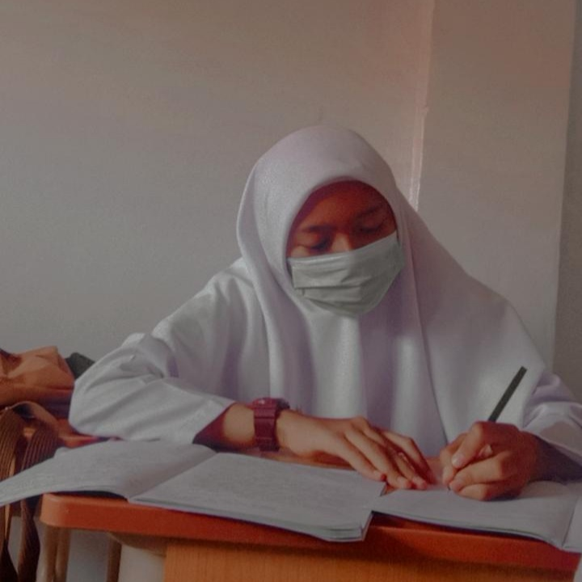

TENTANG SAYA
Hallo, sayaa desi patmawati biasa dipanggil Desi.Umur saya 16 tahun kelahiran Kuningan,15 januari 2004.sekarang saya sedang menempuh pendidikan di SMK AUTO MATSUDA mengambil jurusan TEKHNIK KOMPUTER dan JARINGAN.
-ORGANISASI-
Sebagai siswi saya aktif di organisasi dan ekstrakulikuler yang ada di sekolah, yang pertama ada organisasi siswa intra sekolah dan pramuka.
HOBI dan CITA-CITA
Salah satu hobi saya adalah membaca dan mengarang cerita,terkadang saya juga menulis sebuah karangan. Cita-cita, saya ingin bekerja sebagai sekretaris perkantoran dan menjadi penulis hebat

KEAHLIAN
Microsoft Word
40%
Menulis karangan
70%
BAHASA
BAHASA INDONESIA 80% BAHASA SUNDA 60%